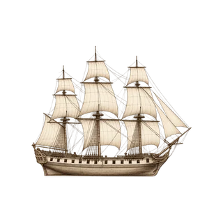
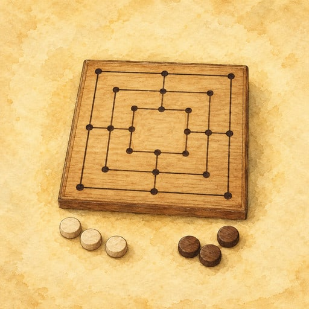

The idea behind the game
The world’s culture, art and science are a treasure that is easily buried under the junk of social media and AI. Matkakirja digs it back up.
◈
Matkakirja is an immersive learning game for ages 13 and up, adults included. Curiosity is sparked by something small, a local delicacy perhaps, and from there a whole country opens up. Nothing feels like school. Yet everything the game tells you has been checked, and every country is shown through the eyes of the people who live there.
AI helps with the searching.
A human chooses and approves everything.
In beta
In the game now
Paris with its sights and its treasure challenge, the space station and the lenses. Board games: Nine Men’s Morris in Berlin, Tavli in Athens and Chess in Vienna. In selected cities the player climbs into the basket of a hot-air balloon, and a guide talks about the sights.



The route continues
Coming next
Amsterdam, London, Rome and Vienna. Each has a challenge of its own.
- Amsterdam: the player picks out the paintings by Dutch artists from among the others.
- London: the player matches each invention with its inventor.
- Rome: the player finds, among the statues, the one that comes from another city, and picks the flag of Italy out of four look-alike flags.
- Vienna: the player listens to melodies and matches them with their composers.